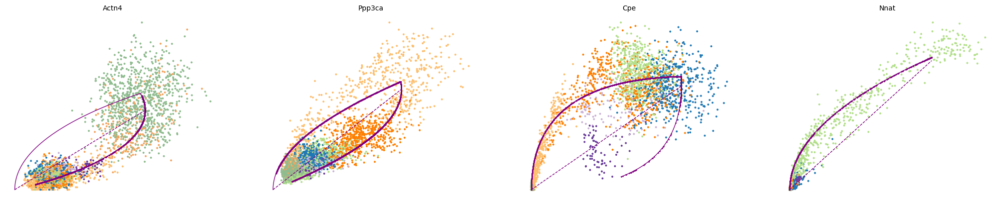
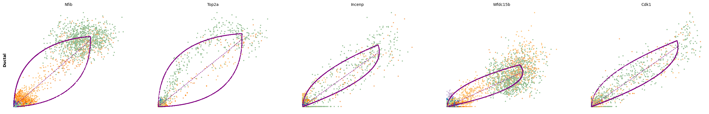
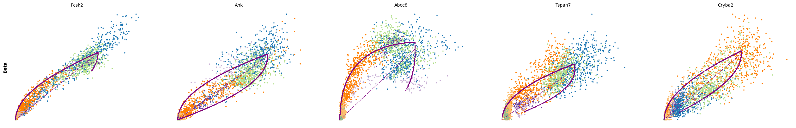

import numpy as np
import pandas as pd
import seaborn as sns
import matplotlib.pyplot as plt
import scanpy as sc
import scvelo as scvRNA velocity with scvelo
Download Presentation: RNA velocity
RNA velocity is a method for estimating the rate of change in gene expression in scRNA-seq dataset. For pseudotime trajectory inference, you need to specify a “root” cell at the start of the trajectory. On the other hand, RNA velocity tells you the direction along which cells are evolving in gene expression space. RNA velocity achieves this by examining the ratio of unspliced (intron-containing pre-mRNA) and spliced (exon-only mature mRNA) UMIs in a dataset.
Loading data into scvelo and examining spliced/unspliced counts
In the presentation, we walked through the theoretical foundations behind RNA velocity. Here, we will demonstrate how to practically apply it to a dataset using the scvelo package, which is nicely integrated with the scanpy framework we have been working with during the past two days. This exercise is adapted from tutorials on the scvelo documentation page.
First, we will load a dataset on pancreatic endocrinogenesis from a recent study:
adata = scv.datasets.pancreas()
adataAnnData object with n_obs × n_vars = 3696 × 27998
obs: 'clusters_coarse', 'clusters', 'S_score', 'G2M_score'
var: 'highly_variable_genes'
uns: 'clusters_coarse_colors', 'clusters_colors', 'day_colors', 'neighbors', 'pca'
obsm: 'X_pca', 'X_umap'
layers: 'spliced', 'unspliced'
obsp: 'distances', 'connectivities'Exercise 1: As we can see from the metadata, this dataset already contains a low dimensional UMAP embedding with cluster annotations. Can you plot this UMAP embedding, coloring the cells by clusters?
# your code here
Exercise 2: Since we will run RNA velocity on these data, we need to have both a spliced and unspliced count matrix. These should be stored in the adata object. Can you find them in adata.layers?
Using the two matrices, can you calculate the fraction of unspliced UMI counts out of the total UMIs, averaged across all of the cells? Hint: You can do this computationally using the .sum(1) and .mean() functions.
We can also use scvelo.pl.proportions to compute and display the proportions of spliced/unspliced counts. Depending on the protocol used, we typically have between 10%-25% of unspliced molecules containing intronic sequences. For single-nuclei data, you will have many more intronic reads, approximately 60%-70%. We suggest you to examine the variations on cluster level to verify consistency in splicing efficiency.
Exercise 3: Use scv.pl.proportions to plot the proportions of spliced and unspliced UMIs. Use the groupby argument to specify that you want to compute the proportions separately for each cluster annotation.
# your code here
Here, we find variations as expected, with slightly lower unspliced proportions at cycling ductal cells, then higher proportion at cell fate commitment in Ngn3-high and Pre-endocrine cells, where many genes start to be transcribed.
Data preprocessing
Next, as with our standard scRNA-seq analysis pipeline, we need to preprocess the data! This requires performing the following steps, which you have studied in previous exercises: - Gene filtering (with a minimum number of counts per cell) - Normalization - Log transformation
In scvelo, these steps are combined into a single function, called scv.pp.filter_and_normalize. We will run that command below with two parameters specified: - min_shared_counts requires a minimum number of counts (both spliced and unspliced) for all genes; any other genes are filtered out - n_top_genes is similar to sc.pp.highly_variable_genes from scanpy, finding the top variable genes and filtering out the others
Exercise 4: Run the filter_and_normalize command requiring a min_shared_counts of at least 20 and selecting 2,000 n_top_genes.
Exercise 5: As we mentioned, scv.pp.filter_and_normalize combines several scanpy functions into a single command. However, if you want full control over the filtering, normalization, and log-transformation steps, you can run each command individually. Can you write the five lines of code needed to achieve the above steps?
Exercise 6: Next, we need to compute a PCA and neighborhood graph, as we have done previously. Write the scanpy commands to compute the PCA and then the neighborhood graph (using n_pcs=30 and n_neighbors=30)
Next, we need to compute the first and second order moments (means and uncentered variances) computed among nearest neighbors in PCA space, summarized in scv.pp.moments.
scv.pp.moments(adata, n_pcs=None, n_neighbors=None)computing moments based on connectivities
finished (0:00:00) --> added
'Ms' and 'Mu', moments of un/spliced abundances (adata.layers)Velocities are vectors in gene expression space and represent the direction and speed of movement of the individual cells. The velocities are obtained by modeling transcriptional dynamics of splicing kinetics, either stochastically (default) or deterministically (by setting mode=‘deterministic’). For each gene, a steady-state-ratio of pre-mature (unspliced) and mature (spliced) mRNA counts is fitted, which constitutes a constant transcriptional state. Velocities are then obtained as residuals from this ratio. Positive velocity indicates that a gene is up-regulated, which occurs for cells that show higher abundance of unspliced mRNA for that gene than expected in steady state. Conversely, negative velocity indicates that a gene is down-regulated.
scv.tl.velocity(adata)computing velocities
finished (0:00:01) --> added
'velocity', velocity vectors for each individual cell (adata.layers)The combination of velocities across genes can then be used to estimate the future state of an individual cell. In order to project the velocities into a lower-dimensional embedding, transition probabilities of cell-to-cell transitions are estimated. That is, for each velocity vector we find the likely cell transitions that are accordance with that direction. The transition probabilities are computed using cosine correlation between the potential cell-to-cell transitions and the velocity vector, and are stored in a matrix denoted as velocity graph. The resulting velocity graph has dimension ùëõùëúùëèùë†√óùëõùëúùëèùë† and summarizes the possible cell state changes that are well explained through the velocity vectors (for runtime speedup it can also be computed on reduced PCA space by setting approx=True).
scv.tl.velocity_graph(adata)computing velocity graph (using 1/160 cores) finished (0:00:10) --> added
'velocity_graph', sparse matrix with cosine correlations (adata.uns)Finally, the velocities are projected onto any embedding, specified by basis, and visualized in one of these ways:
- on cellular level with
scv.pl.velocity_embedding - as gridlines with
scv.pl.velocity_embedding_grid - as streamlines with
scv.pl.velocity_embedding_stream.
Note, that the data has an already pre-computed UMAP embedding, and annotated clusters. When applying to your own data, these can be obtained with scv.tl.umap and scv.tl.louvain, which are direct wrappers around the scanpy functions.
The most fine-grained resolution of the velocity vector field we get at single-cell level, with each arrow showing the direction and speed of movement of an individual cell.
Exercise 7: Plot the RNA velocity using the above functions scv.pl.velocity_embedding and scv.pl.velocity_embedding_stream. What looks different about the two representations? Can you color the embeddings by the clusters? For scv.pl.velocity_embedding, what happens what you change the values for the arrow_length and arrow_size parameters?
# your code herecomputing velocity embedding
finished (0:00:00) --> added
'velocity_umap', embedded velocity vectors (adata.obsm)# your code herePhase portraits and gene-wise velocity results
This is perhaps the most important part! RNA velocity is computed for each gene with scvelo, and the user should not limit biological conclusions to the projected velocities, but rather examine individual gene dynamics via phase portraits. This will allow you to better understand how inferred directions are supported by particular genes.
As we discussed in our live tutorial into the theoretical foundations of RNA velocity: Gene activity is orchestrated by transcriptional regulation. Transcriptional induction for a particular gene results in an increase of (newly transcribed) precursor unspliced mRNAs while, conversely, repression or absence of transcription results in a decrease of unspliced mRNAs. Spliced mRNAs is produced from unspliced mRNA and follows the same trend with a time lag. Time is a hidden/latent variable. Thus, the dynamics needs to be inferred from what is actually measured: spliced and unspliced mRNAs as displayed in the phase portrait.
Exercise 8: Now, let us examine the phase portraits of some marker genes with scv.pl.velocity(adata, gene_names). Set var_names to a list containing the genes Cpe, Gnao1, Ins2 and Ank.
# your code hereExercise 9: Describe the plots above: what can you tell me about the patterns of the four genes, Cpe, Gnao1, Ins2, Adk, along the differentiation trajectory. Transitioning from ductal cells to mature alpha and beta cells, which genes are being upregulated? Which genes are being downregulated along the same trajectory? Are any of the genes limited to a particular cell type or lineage?
We can also use scv.pl.scatter to visualize the phase portrait for a single gene, colored both by the cell clusters and the magnitude of the velocity:
scv.pl.scatter(adata, 'Cpe', color=['clusters', 'velocity'],
add_outline='Ngn3 high EP, Pre-endocrine, Beta')
Exercise 10: What does the black dashed line represent in the phase portrait plots, and how does this relate to the way in which RNA velocity is determined?
We need a systematic way to identify genes that may help explain the resulting vector field and inferred lineages. To do so, we can test which genes have cluster-specific differential velocity expression, being siginificantly higher/lower compared to the remaining population. The module scv.tl.rank_velocity_genes runs a differential velocity t-test and outpus a gene ranking for each cluster. Thresholds can be set (e.g. min_corr) to restrict the test on a selection of gene candidates.
scv.tl.rank_velocity_genes(adata, groupby='clusters', min_corr=.3)
df = pd.DataFrame(adata.uns['rank_velocity_genes']['names'])
df.head()ranking velocity genes/home/alex/anaconda3/envs/sctp/lib/python3.8/site-packages/scvelo/tools/utils.py:463: DeprecationWarning: Please use `rankdata` from the `scipy.stats` namespace, the `scipy.stats.stats` namespace is deprecated.
from scipy.stats.stats import rankdata finished (0:00:02) --> added
'rank_velocity_genes', sorted scores by group ids (adata.uns)
'spearmans_score', spearmans correlation scores (adata.var)| Ductal | Ngn3 low EP | Ngn3 high EP | Pre-endocrine | Beta | Alpha | Delta | Epsilon | |
|---|---|---|---|---|---|---|---|---|
| 0 | Notch2 | Ptpn3 | Pde1c | Sdk1 | Pax6 | Zcchc16 | Ptprt | Ica1 |
| 1 | Sox5 | Slc9a9 | Pclo | Abcc8 | Unc5c | Prune2 | Zdbf2 | Ctnna2 |
| 2 | Krt19 | Kcnq1 | Grik2 | Gnas | Nnat | Nell1 | Spock3 | Sorcs1 |
| 3 | Ano6 | Dcbld1 | Ttyh2 | Ptprn2 | Scg3 | Aff2 | Slc16a12 | A1cf |
| 4 | Rbms3 | Trp53cor1 | Setbp1 | Asic2 | Tmem108 | Chrm3 | Fam155a | Zcchc16 |
kwargs = dict(frameon=False, size=10, linewidth=1.5,
add_outline='Ngn3 high EP, Pre-endocrine, Beta')
scv.pl.scatter(adata, df['Ngn3 high EP'][:5], ylabel='Ngn3 high EP', **kwargs)
scv.pl.scatter(adata, df['Pre-endocrine'][:5], ylabel='Pre-endocrine', **kwargs)
The genes Ptprs, Pclo, Pam, Abcc8, Gnas, for instance, support the directionality from Ngn3 high EP (yellow) to Pre-endocrine (orange) to Beta (green).
Dynamical modeling of RNA velocity
Since RNA velocity yields insights into the directionality of gene expression change, we can use the approach to infer a trajectory. One way this is acheives is by recovering estimates of the full transcriptional dynamics (i.e., the transcription rate, the splicing rate, and the degradation rate) instead of using the steady-state asusmption and linear fits. This is particularly useful when you have a dataset without a cluster of cells representing the “steady-state”.
Dynamical modeling of RNA velocity is possible with scvelo and allows for: - Estimation of a latent time - Identification of possible driver genes
We run the dynamical model to learn the full transcriptional dynamics of splicing kinetics.
It is solved in a likelihood-based expectation-maximization framework, by iteratively estimating the parameters of reaction rates and latent cell-specific variables, i.e. transcriptional state and cell-internal latent time. It thereby aims to learn the unspliced/spliced phase trajectory for each gene.
The function scv.tl.recover_dynamics uses expectation maximization to recover the gene velocity dynamics. It will take about 5 mins to run. In the meantime, have a look at the following steps.
scv.tl.recover_dynamics(adata)recovering dynamics (using 1/160 cores) finished (0:06:39) --> added
'fit_pars', fitted parameters for splicing dynamics (adata.var)Then, we before we need to estiamte the velocity and compute the velocity graph, specifying this time the “dynamical” mode.
scv.tl.velocity(adata, mode='dynamical')
scv.tl.velocity_graph(adata)computing velocities
finished (0:00:04) --> added
'velocity', velocity vectors for each individual cell (adata.layers)
computing velocity graph (using 1/160 cores) finished (0:00:06) --> added
'velocity_graph', sparse matrix with cosine correlations (adata.uns)scv.pl.velocity_embedding_stream(adata, basis='umap')computing velocity embedding
finished (0:00:00) --> added
'velocity_umap', embedded velocity vectors (adata.obsm)With the dynamical model, The rates of RNA transcription, splicing and degradation are estimated without the need of any experimental data.
They can be useful to better understand the cell identity and phenotypic heterogeneity.
df = adata.var
df = df[(df['fit_likelihood'] > .1) & df['velocity_genes'] == True]
kwargs = dict(xscale='log', fontsize=16)
with scv.GridSpec(ncols=3) as pl:
pl.hist(df['fit_alpha'], xlabel='transcription rate', **kwargs)
pl.hist(df['fit_beta'] * df['fit_scaling'], xlabel='splicing rate', xticks=[.1, .4, 1], **kwargs)
pl.hist(df['fit_gamma'], xlabel='degradation rate', xticks=[.1, .4, 1], **kwargs)
scv.get_df(adata, 'fit*', dropna=True).head()| fit_alpha | fit_beta | fit_gamma | fit_t_ | fit_scaling | fit_std_u | fit_std_s | fit_likelihood | fit_u0 | fit_s0 | fit_pval_steady | fit_steady_u | fit_steady_s | fit_variance | fit_alignment_scaling | fit_r2 | |
|---|---|---|---|---|---|---|---|---|---|---|---|---|---|---|---|---|
| index | ||||||||||||||||
| Sntg1 | 0.010688 | 0.003801 | 0.070298 | 26.614919 | 48.409039 | 1.015340 | 0.024470 | 0.382195 | 0.0 | 0.0 | 0.034819 | 2.402895 | 0.072442 | 0.238926 | 6.656648 | 0.467566 |
| Sbspon | 0.466790 | 2.485521 | 0.407607 | 3.988951 | 0.145663 | 0.058015 | 0.188189 | 0.267242 | 0.0 | 0.0 | 0.206473 | 0.150839 | 0.503312 | 0.690054 | 1.242929 | 0.630782 |
| Mcm3 | 3.759589 | 52.011484 | 0.885513 | 1.945249 | 0.011923 | 0.015849 | 0.686825 | 0.118566 | 0.0 | 0.0 | 0.483623 | 0.060455 | 2.054615 | 1.426064 | 0.765975 | 0.275293 |
| Fam135a | 0.185720 | 0.124718 | 0.218989 | 10.854791 | 1.090526 | 0.353996 | 0.153378 | 0.293041 | 0.0 | 0.0 | 0.397257 | 1.331401 | 0.395752 | 0.611777 | 3.308631 | 0.363101 |
| Adgrb3 | 0.034546 | 0.007763 | 0.222066 | 8.947714 | 120.303430 | 2.122017 | 0.030074 | 0.295653 | 0.0 | 0.0 | 0.063172 | 4.564255 | 0.093443 | 0.525843 | 1.825699 | 0.399879 |
The dynamical model recovers the latent time of the underlying cellular processes. This latent time represents the cell’s internal clock and approximates the real time experienced by cells as they differentiate, based only on its transcriptional dynamics. This offers advantages over traditional pseudotime trajectory inference approaches.
scv.tl.latent_time(adata)
scv.pl.scatter(adata, color='latent_time', color_map=plt.cm.Spectral, size=80)computing latent time using root_cells as prior
finished (0:00:01) --> added
'latent_time', shared time (adata.obs)
Exercise 11: Take a look back at the previous exercise, where the diffusion pseudotime was calculated for the same dataset. Are there differences between the dpt_pseudotime and latent_time estimates?
Driver genes display pronounced dynamic behavior and are systematically detected via their characterization by high likelihoods in the dynamic model. We can plot a heatmap of the top 300 genes expressed along the pseudotime.
top_genes = adata.var['fit_likelihood'].sort_values(ascending=False).index[:300]
scv.pl.heatmap(adata, var_names=top_genes, sortby='latent_time', col_color='clusters', n_convolve=100)
For any top candidates that you might want to validate biologically, it is always essential to examine the phase portraits, to ensure that the gene is not too noisy.
top_genes = adata.var['fit_likelihood'].sort_values(ascending=False).index
scv.pl.scatter(adata, basis=top_genes[:15], ncols=5, frameon=False)var_names = ['Actn4', 'Ppp3ca', 'Cpe', 'Nnat']
scv.pl.scatter(adata, var_names, frameon=False)
scv.pl.scatter(adata, x='latent_time', y=var_names, frameon=False)
We can then use scv.tl.rank_dynamical_genes to rank the top dynamical genes by cluster. These are the genes that most strongly contribute to the cell-wise velocity for cells belonging to each cluster.
scv.tl.rank_dynamical_genes(adata, groupby='clusters')
df = scv.get_df(adata, 'rank_dynamical_genes/names')
df.head(5)ranking genes by cluster-specific likelihoods
finished (0:00:03) --> added
'rank_dynamical_genes', sorted scores by group ids (adata.uns)| Ductal | Ngn3 low EP | Ngn3 high EP | Pre-endocrine | Beta | Alpha | Delta | Epsilon | |
|---|---|---|---|---|---|---|---|---|
| 0 | Nfib | Lockd | Rbfox3 | Pcsk2 | Pcsk2 | Gnao1 | Pcsk2 | Pak3 |
| 1 | Top2a | Dcdc2a | Btbd17 | Abcc8 | Ank | Cpe | Abcc8 | Tox3 |
| 2 | Incenp | Adk | Tspan5 | Rap1b | Abcc8 | Pak3 | Pak3 | Rap1gap2 |
| 3 | Wfdc15b | Bicc1 | Rap1gap2 | Tmem163 | Tspan7 | Rap1b | Rap1b | Rnf130 |
| 4 | Cdk1 | Wfdc15b | Sulf2 | Ank | Cryba2 | Pim2 | Meis2 | Meis2 |
for cluster in ['Ductal', 'Ngn3 high EP', 'Pre-endocrine', 'Beta']:
scv.pl.scatter(adata, df[cluster][:5], ylabel=cluster, frameon=False)


Velocities in cycling progenitors
The cell cycle detected by RNA velocity, and it is biologically affirmed by cell cycle scores (standardized scores of mean expression levels of phase marker genes).
scv.tl.score_genes_cell_cycle(adata)
scv.pl.scatter(adata, color_gradients=['S_score', 'G2M_score'], smooth=True, perc=[5, 95])calculating cell cycle phase
--> 'S_score' and 'G2M_score', scores of cell cycle phases (adata.obs)For the cycling Ductal cells, we may screen through S and G2M phase markers. The previous module also computed a spearmans correlation score, which we can use to rank/sort the phase marker genes to then display their phase portraits.
s_genes, g2m_genes = scv.utils.get_phase_marker_genes(adata)
s_genes = scv.get_df(adata[:, s_genes], 'spearmans_score', sort_values=True).index
g2m_genes = scv.get_df(adata[:, g2m_genes], 'spearmans_score', sort_values=True).index
kwargs = dict(frameon=False, ylabel='cell cycle genes')
scv.pl.scatter(adata, list(s_genes[:2]) + list(g2m_genes[:3]), **kwargs)Particularly Hells and Top2a are well-suited to explain the vector field in the cycling progenitors. Top2a gets assigned a high velocity shortly before it actually peaks in the G2M phase. There, the negative velocity then perfectly matches the immediately following down-regulation.
Exercise 12: As you did previously for other genes, can you use scvelo plotting functions to visualize the phase portraits and gene-wise velocity for the Hells and Top2a genes?
# your code hereThe cell cycle is an interesting case for RNA velocity estimation, as pseudotime methods along often fail as estimations of cyclical processes. Moreover, RNA velocity corresponds roughly to cell cycle speed, which is both experimentally verifiable. The cell cycle also unfolds on a timescale of less than 24 hours, which is well suited for studying cell dynamics using RNA lifecycle kinetics, such as with RNA velocity.